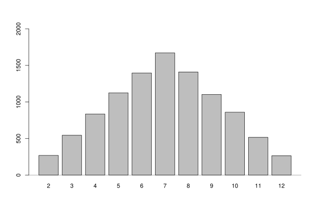
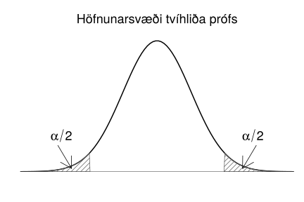
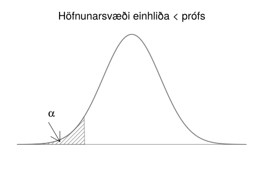
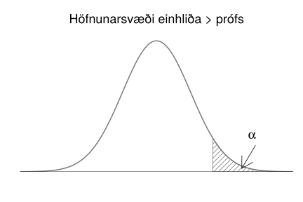
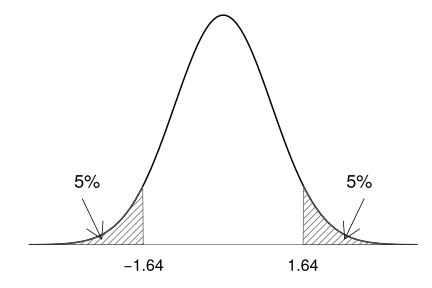
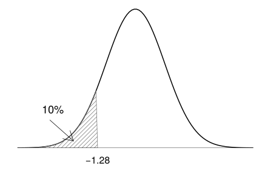
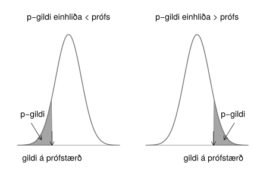

6. Ályktunartölfræði
Ályktunartölfræði er samheiti yfir allar þær aðferðir sem nota úrtak til að draga ályktanir um allt þýðið. Ályktunartölfræði er þarf af leiðandi eingöngu hægt að framkvæma á slembiúrtökum. Því leyfum við okkur, þegar við fjöllum um ályktunartölfræði, að tala um úrtök þegar við eigum í raun eingöngu við slembiúrtök. Í þessum kafla lýsum við þeirri hugmyndafræði sem ályktunartölfræði byggir á og munum við notast við þau hugtök sem hér eru kynnt í hverjum einasta kafla héðan frá.
Nú þegar við höfum fengið góð kynni af slembistærðum má sjá lýsistærðir, sem við kynntumst í kafla 4, í nýju ljósi. Við gerum ráð fyrir að mælingar á breytu séu gildi sem slembistærð hefur tekið og um leið áttum við okkur á því að þau gildi breytast sennilega ef nýtt úrtak er valið. Lýsistærðir verða reiknaðar út frá mælingunum okkar og þegar mælingarnar breytast þá er að sama skapi líklegt að lýsistærðirnar breytist um leið. Þar af leiðandi eru lýsistærðir í raun slembistærðir!
Við byrjum á að fjalla um hvaða áhrif líkindadreifing slembistærða hefur á þær mælingar sem við munum sjá sem og lýsistærðirnar sem út frá þeim eru reiknaðar. Í kafla 6.1 kynnumst við úrtaksdreifingu lýsistærðar og veitum úrtaksdreifingu meðaltals sérstaka athygli í kafla 6.2. Þannig leggjum við grunninn fyrir höfuðsetningu tölfræðinnar, en henni kynnumst við í kafla 6.3.
Í ályktunartölfræði reiðum við okkur á lýsistærðir, sér í lagi metla og prófstærðir. Þeim kynnumst við í kafla 6.4. Í kafla 6.5 reiknum við öryggisbil fyrir gildi stikanna sem segja okkur hvaða önnur gildi en matið sjálft eru líkleg. Að lokum notum við prófstærðir í kafla 6.6 þegar við framkvæmum tilgátupróf sem leyfa okkur stundum að fullyrða um ákveðna eiginleika gagnanna.
6.1. Úrtaksdreifing lýsistærðar
6.1.1. Úrtaksdreifing lýsistærðar
Rifjum upp skilgreininguna á lýsistærð í kassa 4.1.1.1. Þar stendur að lýsistærð sé tala sem verður reiknuð með einhverjum ákveðnum hætti út frá mælingunum okkar. Nú þegar höfum áttað okkur á að þessar tölur eru í raun útkomur slembistærðar þá er næsta skref að skoða dreifingu þessarar slembistærðar. Hana köllum við úrtaksdreifingu lýsistærðar (e. sampling distribution).
6.1.1.1. Úrtaksdreifing lýsistærðar (sampling distribution)
Athugið
Sérhver lýsistærð er slembistærð og hefur þar af leiðandi einhverja líkindadreifingu. Þá líkindadreifingu köllum við úrtaksdreifingu lýsistærðarinnar.
Úrtaksdreifing lýsistærðar er bæði háð stærð úrtaksins sem og líkindadreifingu mælinganna sem notaðar eru til að reikna lýsistærðina, sem einnig er kölluð líkindadreifing þýðisins. Síðar í kaflanum munið þið reyndar sjá að þegar við vinnum með lýsistærðina meðaltal þurfum við ekki að vita líkindadreifingu upphaflegu mælinganna ef fjöldi mælinga í úrtakinu okkar er nógu mikill. Það gefur höfuðsetning tölfræðinnar (e. central limit theorem), mikilvægust allra tölfræðisetninga.
Eins og áður gerum við ráð fyrir að eingöngu sé unnið með slembiúrtök og því þurfi ekki að hafa áhyggjur af úrtaksbjaga. Ef úrtaksbjagi er til staðar þá hefur hann að sjálfsögðu áhrif á mælingarnar okkar og þar af leiðandi lýsistærðirnar sem við reiknum út frá þeim. Það er hins vegar oft erfitt, ef ekki ómögulegt, að segja til um hvaða áhrif úrtaksbjaginn mun hafa og því munum við ekki ræða þau áhrif frekar. Hins vegar verður góð vísa ekki of oft kveðin: Ef ekki er nægjanlega vel staðið að úrtakshöguninni verður frekari tölfræðiúrvinnsla marklaus.
Lýsistærðin sem leggur saman útkomuna úr tveggja teninga kasti er á margan hátt góð til að kanna úrtaksdreifingu lýsistærðar. Hér fyrir neðan höfum við skrifað möguleg gildi sem lýsistærðin getur tekið í neðstu línuna en þær útkomur úr teningakastinu sem gefa viðeigandi gildi koma beint fyrir ofan gildið.
(6,1) |
||||||||||
(5,1) |
(5,2) |
(6,2) |
||||||||
(4,1) |
(4,2) |
(4,3) |
(5,3) |
(6,3) |
||||||
(3,1) |
(3,2) |
(3,3) |
(3,4) |
(4,4) |
(5,4) |
(6,4) |
||||
(2,1) |
(2,2) |
(2,3) |
(2,4) |
(2,5) |
(3,5) |
(4,5) |
(5,5) |
(6,5) |
||
(1,1) |
(1,2) |
(1,3) |
(1,4) |
(1,5) |
(1,6) |
(2,6) |
(3,6) |
(4,6) |
(5,6) |
(6,6) |
2 |
3 |
4 |
5 |
6 |
7 |
8 |
9 |
10 |
11 |
12 |

Mynd 6.1 Hermun á 10000 teningaköstum
Sérhver útkomanna í teningakastinu hér að ofan er jafnlíkleg en hins vegar gefa mismargar þeirra sömu summuna. Til dæmis gefur einungis útkoman (1,1) gildið 2, en á móti gefa útkomurnar (4,6), (5,5) og (6,4) allar gildið 10. Á mynd 6.1 má sjá útkomu úr hermun á 10000 teningaköstum. Það er engin tilviljun að lögun stuðlaritsins líkist myndinni hér að ofan, það lýsir úrtaksdreifingu lýsistærðarinnar ,,summa tveggja teninga“.
6.2. Lýsistærðin meðaltal
6.2.1. Lýsistærðin meðaltal
Þar sem meðaltal er bæði ein algengasta lýsistærðin sem við notum og hefur auk þess marga ánægjulega eiginleika, þá ætlum við að skoða hana aðeins nánar.
Hugsum okkur að við viljum kanna sem dæmi meðalþyngd Íslendinga. Við tökum slembiúrtak 10 Íslendinga, mælum þyngd hvers og eins og reiknum út frá því meðaltal mælinganna okkar. Hér eru upphaflegu mælingarnar þyngd hvers og eins af Íslendingunum tíu en lýsistærðin sem verður reiknuð er meðaltal þessara 10 mælinga.
Við gætum endurtekið tilraunina og valið upp á nýtt 10 manna slembiúrtak. Þá myndu aðrir 10 einstaklingar veljast í úrtakið og því er sennilegt að meðalþyngd þeirra 10 einstaklinga verði önnur en þeirra 10 sem valdir voru í fyrsta skiptið. Það er, lýsistærðin meðaltal tekur nýtt gildi.
Þar sem við höfum, í þessu dæmi, eingöngu áhuga á því að kanna meðalþyngd Íslendinga þá er þyngd hvers og eins einstaklings ekki áhugaverð, heldur eingöngu meðalþyngd allra viðfangsefnanna. Því viljum við oft vita: Hvaða útkomur myndum við búast við að sjá ef meðaltalið yrði reiknað aftur og aftur fyrir nýtt og nýtt úrtak? Góð leið til að lýsa því er með því að reikna væntigildi og dreifni meðaltalsins.
Eins og þið vitið þá fæst meðaltal með því að einfaldlega leggja saman útkomur slembistærðar og deila með fjölda mælinga. Þá er gott að hafa eftirfarandi reglur í huga.
6.2.1.1. Reiknireglur fyrir væntigildi slembistærða
Athugið
Ef \(X\) og \(Y\) eru tvær slembistærðir, þá er
Athugasemd
Efri jafnan segir að væntigildi af summu tveggja slembistærða sé sú sama og summan af væntigildum slembistærðanna tveggja. Sú neðri segir að væntigildi mismunar tveggja slembistærða sé jafnt mismun væntigilda slembistærðanna tveggja.
6.2.1.2. Reiknireglur fyrir dreifni slembistærða
Athugið
Ef \(X\) og \(Y\) eru tvær óháðar slembistærðir er
Athugasemd
Efri jafnan segir að dreifni summu tveggja slembistærða sé jöfn summu dreifni hvorrar slembistærðar fyrir sig. Neðri jafnan segir að dreifni mismunar tveggja slembistærða sé jöfn summu dreifni hvorrar slembistærðar fyrir sig.
6.2.1.3. Sýnidæmi: Væntigildi summu tveggja slembistærða
Ábending
Væntigildi útkomunnar þegar tening er kastað er 3.5 með dreifnina 2.92. Hvert er væntigildi og dreifni summu útkomunnar þegar tveimur teningum er kastað?
Setjum sem svo að \(X_1\) og \(X_2\) séu bæði slembistærðir sem lýsa einföldu teningakasti. Þá er væntigildi summu \(X_1\) og \(X_2\) talan \(E[X_1 + X_2]\) sem samkvæmt jöfnu (6.1) er jöfn \(E[X_1]\) + \(E[X_2]\) sem bæði eru jöfn 3.5. Við fáum því að
Við getum reiknað dreifni \(X_1+X_2\), eða tvöfalda teningakastsins með jöfnu (6.3):
svo dreifni útkoma úr tvöföldu teningakasti er 5.84.
Þessar reglur má með einföldum hætti útvíkka til að finna væntigildi og dreifni meðaltals.
6.2.1.4. Væntigildi og dreifni meðaltals (Expected value and variance of the mean)
Athugið
Ef \(X_1, \ldots, X_n\) eru óháðar og einsdreifðar slembistærðir með væntigildi \(E[X_i] = \mu\) og dreifni \(Var[X_i] = \sigma^2\) þá gildir um meðaltal þeirra, \(\bar X\) að:
Athugasemd
Væntigildi meðaltals er því það sama og væntigildi slembistærðanna sem það er reiknað af en dreifnin minnkar í réttu hlutfalli við fjölda mælinga.
Þar sem lýsistærðin meðaltal er svo mikið notuð hefur staðalfrávik hennar sérstakt heiti, sem kallast staðalskekkja (e. standard error).
6.2.1.5. Staðalskekkja (standard error)
Athugið
Ef \(\bar X\) er meðaltal \(X_1, \ldots, X_n\), óháðra og einsdreifðra slembistærða með dreifni \(Var[X_i] = \sigma^2\), þá er staðalskekkja þeirra
Hún er staðalfrávik meðaltals mælinganna.
Athugasemd
Takið eftir að
svo staðalskekkjan er kvaðratrótin af dreifni meðaltalsins, eins og við er að búast.
Gætið ykkar að í daglegu tali táknar orðið meðaltal yfirleitt tiltekna útkomu, en ekki lýsistærðina meðaltal. Því viljum við ítreka að í þessum kafla á orðið meðaltal við lýsistærðina (og þar af leiðandi slembistærðina) meðaltal. Lýsistærðin meðaltal mun verða reiknuð út frá mælingunum okkar, en við vitum ekki enn hverjar mælingarnar okkar verða og þar af leiðandi ekki heldur hver útkoma meðaltals þeirra verður. Rithátturinn er einnig ágætis áminning: Við notum hástafi þegar við ræðum um lýsistærðir en lágstafi þegar við ræðum um útkomur þeirra.
6.2.1.6. Sýnidæmi: Væntigildi og dreifni meðaltals
Ábending
Guðrún Helga er ansi lunkin að brugga hvítvín og á orðið dágott safn af flöskum. Vínið hennar inniheldur að meðaltali 12% alkóhól, með staðalfrávikið 1.5%. Næsta laugardag mun hún halda fjölmenna veislu þar sem hún ætlar að bjóða upp á 20 flöskur af víni. Hún hefur hins vegar áhyggjur af því að alkóhólmagnið verði mjög breytilegt eftir flöskum. Því grípur hún til þess ráðs að blanda saman víni úr 20 flöskum og hella í jafnmargar könnur. Finnið væntigildi og dreifni áfengisprósentu könnu sem valin er af handahófi.
Þegar Guðrún blandar öllu víninu saman og hellir aftur í könnur inniheldur sérhver kanna sama vínið, sem er ,,meðalvín“ allra 20 flasknanna. Látum slembistærðina \(X\) tákna áfengisprósentu vínsins hennar Guðrúnar en slembistærðina \(\bar X\) tákna áfengisprósentu meðalvínsins. Vínið hennar Guðrúnar inniheldur að meðaltali 12% alkóhól, svo \(\mu = 0.12\). Notum nú jöfnu (6.5) til að reikna væntigildi áfengisprósentu ,,meðalvínsins“. Væntigildið verður því
eða það sama og væntigildi upphaflega vínsins. Meðalvínið er hins vegar búið til úr 20 flöskum af víni með staðalfrávik 1.5 svo \(n=20\) og \(\sigma = 1.5\). Notum nú jöfnu (6.6) til að reikna dreifni meðalvínsins. Dreifnin verður þá
Ef við búum svo vel að þýðið okkar sé normaldreift, það er að mælingarnar fylgi sömu normaldreifingunni, þá verður úrtaksdreifing meðaltalsins líka normaldreifð. Meðaltalið verður það sama en staðalskekkjan tekur við hlutverki staðalfráviksins.
6.2.1.7. Líkindadreifing meðaltals normaldreifðra slembistærða
Athugið
Ef \(X_1, \ldots, X_n\) eru slembistærðir úr normaldreifingu með væntigildi \(\mu\) og dreifni \(\sigma^2\) þá fylgir \(\bar X\) einnig normaldreifingu, með væntigildi \(\mu\) og dreifni \(\sigma^2/n\).
Framkvæmum nú litla tilraun. Búum til þýði sem samanstendur af 10000 mælingum sem fylgja stöðluðu normaldreifingunni. Í efra vinstra horninu á mynd 6.2 má sjá stuðlarit af þýðinu.
Tökum nú 10000 sinnum slembiúrtak af stærð 2 (\(n\)=2) úr þýðinu og finnum meðaltal þessara tveggja mælinga. Teiknum svo stuðlarit af þessum 10000 tölum sem hver og ein er útkoma meðaltals tveggja mælinga. Stuðlaritið má sjá í efra hægra horninu á mynd 6.2.
Þetta endurtökum við tvisvar til viðbótar en stækkum nú slembiúrtökin sem við veljum og tökum slembiúrtak af stærð 5 í fyrra skiptið og að lokum slembiúrtök af stærð 10. Stuðlaritin þegar \(n\) = 5 og \(n\) = 10 má sjá á neðri helming myndar 6.2.
Séu stuðlaritin skoðuð má sjá að í öllum tilfellum fylgir dreifingin normaldreifingu með meðaltal 0 en dreifnin er ekki sú sama. Hún minnkar eftir því sem stærð slembiúrtakanna stækkar eins og jafna (6.7) segir til um.
Hér sjáum við svart á hvítu hvernig úrtaksdreifing \(\bar{X}\) er bæði háð fjölda mælinga (í gegnum \(n\)) og dreifingu þýðisins (í gegnum \(\mu\) og \(\sigma\)).
Mynd 6.2 Úrtaksdreifing meðaltals
6.2.1.8. Sýnidæmi: Líkindadreifing meðaltals normaldreifðra slembistærða
Ábending
Einkunn nemenda í samræmdu könnunarprófi í íslensku er normaldreifð með \(\mu = 5\) og \(\sigma=2\). Hver er líkindadreifing meðaleinkunnar 10 nemenda sem valdir eru af handahófi?
Samkvæmt kassa 6.2.1.7 er meðaleinkunn 10 nemenda líka normaldreifð með stikana \(\mu = 5\) og \(\sigma^2/n = 4/10 = 0.4\). Svo meðaleinkunn 10 nemenda fylgir \(N(5,0.4)\).
6.3. Höfuðsetning tölfræðinnar
6.3.1. Höfuðsetning tölfræðinnar
Nú er komið að sjálfri höfuðsetningu tölfræðinnar en hún ber svo sannarlega nafn með rentu og útskýrir í raun hví svo mikil áhersla er lögð á normaldreifingu í tölfræði og líkindafræði. Höfuðsetningin fjallar um úrtaksdreifingu meðaltals og segir að sú úrtaksdreifing verði normaldreifð ef það eru nægjanlega margar mælingar í úrtakinu.
6.3.1.1. Höfuðsetning tölfræðinnar (Central limit theorem)
Athugið
Ef \(X_1, \ldots, X_n\) eru óháðar og einsdreifðar slembistærðir þá fylgir \(\bar X\) normaldreifingu með væntigildi \(\mu\) og dreifni \(\sigma^2/n\)
óháð dreifingu \(X_1, \ldots, X_n\) ef \(n\) er nógu stórt.
Þetta þýðir að ef við tökum meðaltal nógu margra mælinga þá mun það meðaltal fylgja normaldreifingu sama hver dreifing upprunalegu mælinganna er. Það sem meira er, þá vitum við stika dreifingarinnar. Gætið ykkar að þetta gildir eingöngu ef mælingarnar eru óháðar og fylgja allar sömu dreifingu.
Takið eftir að ef \(X_i\) eru normaldreifðar gildir reglan fyrir öll \(n\). Því meira sem dreifing \(X_i\) víkur frá normaldreifingu, því stærra \(n\) er þörf. Þetta getum við líka orðað sem svo: Ef upprunalegu mælingarnar eru normaldreifðar gildir reglan alltaf, því meira sem upphaflegu mælingarnar víkja frá normaldreifingu, því fleiri mælingar þurfum við til að meðaltal þeirra verði normaldreift.
Þessi eiginleiki er sýndur myndrænt á myndum 6.3 og 6.4. Á myndunum má sjá stuðlarit af þýði og stuðlarit af úrtaksdreifingu meðaltals fyrir \(n=5\), \(n=10\) og \(n=30\). Á mynd 6.3 er dreifing þýðisins mjög skekkt til hægri en þýðið á mynd 6.4 er nær því að fylgja normaldreifingu.
Mynd 6.3 Úrtaksdreifing meðaltals þar sem þýðið fylgir mjög skekktri dreifingu
Mynd 6.4 Úrtaksdreifing meðaltals þar sem þýðið fylgir lítið skekktri dreifingu
Ágætis viðmið er að fjöldi mælinga, \(n\), sé stærri en 30 en það er ekki algilt. Gætið þess einnig að eins og alltaf þurfa mælingarnar að vera óháðar og einsdreifðar annars getum við ekkert fullyrt!
6.4. Metlar og prófstærðir
6.4.1. Metlar og prófstærðir
Í ályktunartölfræði er aðallega stuðst við tvo flokka af lýsistærðum. Annar flokkurinn inniheldur metla en það eru lýsistærðir sem gefa mat á stikum líkindadreifingarinnar sem upphaflegu mælingarnar fylgja. Hinn flokkurinn hefur að geyma prófstærðir. Þær notum við til að framkvæma tilgátupróf sem geta mögulega hrakið fullyrðingar um ákveðna eiginleika mælinganna. Tilgátupróf eru betur kynnt til sögunnar í kafla 6.6.
Eins og við fjölluðum um í 5. kafla, lítum við svo á að mælingarnar okkar séu útkomur sem slembistærð hefur tekið. Því er líkindadreifing slembistærðarinnar oft kölluð líkindadreifing þýðisins. Í raun vitum við nær aldrei hver sú líkindadreifing er nákvæmlega en við getum oft leyft okkur að áætla að hún sé af tiltekinni gerð.
Við sáum að ef við vitum gerð líkindadreifingar, þá gefa stikar dreifingarinnar okkur allar þær upplýsingar sem hægt er að fá um líkindadreifinguna. Þar af leiðandi er öll sú vitneskja sem hægt er að fá um eðli mælinganna fólgin í gildunum á stikunum sem lýsa líkindadreifingu þeirra.
Eitt af verkefnum ályktunartölfræði er að nota mælingarnar okkar til að meta hver gildin á stikum líkindadreifingar þeirra eru. Þær útkomur sem við munum fá þegar við metum gildi stikanna eru háðar mælingunum okkar og geta breyst í hvert sinn sem nýtt úrtak er valið. Þær eru því lýsistærðir og við köllum þær metla (e. estimators).
6.4.1.1. Metill (estimator)
Athugið
Metill er lýsistærð sem metur stika tölfræðilíkans.
Í þessari bók verður fjallað um metla á stikum normaldreifingar, Poisson dreifingar og tvíkostadreifingar. Þeir stikar voru táknaðir með \(\mu\), \(\sigma\), \(\lambda\) og \(p\). Í raun vitum við ekki gildin á þessum stikum, heldur notum metla til að finna þá. Þegar við höfum reiknað gildi metils fyrir eitthvað tiltekið úrtak köllum við útkomuna mat (e. estimate).
Til að skerpa á muninum á sönnu gildi stika annars vegar og matinu á honum hins vegar er sanna gildið táknað með grískum bókstaf en matið á því gildi táknað með latneska stafrófinu. Undantekning á þeirri reglu er þó \(p\) og er það vegna þess að gríska p-ið er \(\pi\) sem hefur verið frátekið fyrir töluna \(\pi\).
Sömuleiðis gætum við þess að tákna metla með stórum staf en útkomur þeirra með litlum staf í samræmi við það að slembistærðir eru táknaðar með stórum staf en útkomur þeirra með litlum. Hér á eftir munum við sjá þrjá metla. Metillinn \(\bar X\) metur \(\mu\) eða \(\lambda\), eftir því sem við á. Útkoma hans er matið \(\bar x\). Metillinn \(S^2\) metur \(\sigma^2\) og er matið \(s^2\). Loks metur metilinn \(P\) stikann \(p\) en þá táknum við matið með \(\hat p\).
6.4.1.2. Metill á meðaltal slembistærðar
Athugið
Metillinn sem við notum til að meta meðaltal slembistærðar er
þar sem \(n\) er heildarfjöldi mælinga. \(\bar X\) er einfaldlega meðaltal allra mælinganna.
Við notum metilinn \(\bar X\) þegar gögnin fylgja normaldreifingu eða Poisson dreifingu. Í fyrra tilvikinu metur metillinn \(\mu\) í því seinna metur hann \(\lambda\). Mötin táknum við með \(\bar x\).
6.4.1.3. Sýnidæmi: Metlar - \(\bar{X}\)
Ábending
Það er talið að fjöldi barna sem handleggsbrjóta sig á hverjum degi fylgi Poisson dreifingu. Eggert, læknir á slysadeild, vill meta hversu mörg börn handleggsbrjóta sig að meðaltali á hverjum degi. Hann hefur í höndum fjölda handleggsbrota síðustu 10 daga, en þau reyndust 2, 0, 1, 7, 3, 3, 6, 4, 4, 1. Hvert metur Eggert meðalfjölda handleggsbrota vera á hverjum degi?
Þar sem fjöldi barna sem handleggsbrjóta sig lýtur Poisson dreifingu þá gefur stikinn \(\lambda\) meðalfjölda barna sem brjóta sig á hverjum degi. Metillinn fyrir þann stika er \(\bar X\), sem er meðaltal mælinganna. Eggert metur því fjöldann
Hann áætlar því að 3.1 barn handleggsbrjóti sig að meðaltali á dag.
6.4.1.4. Metill á dreifni slembistærðar
Athugið
Metillinn sem við notum til að meta dreifni slembistærðar er
þar sem \(\bar X\) er metill á meðaltal mælinganna og \(n\) er heildarfjöldi mælinga.
Athugasemd
Formúluna að ofan reiknum við með eftirfarandi hætti:
Fyrst finnum við meðaltal mælinganna.
Síðan drögum við hverja mælingu frá meðaltalinu.
Þar næst setjum við sérhverja stærð úr lið 2 í annað veldi.
Við leggjum saman allar stærðirnar úr lið 3.
Að lokum deilum við með n-1.
Við notum metilinn \(S^2\) þegar gögnin lúta normaldreifingu, þá metur hann \(\sigma^2\). Matið táknum við með \(s^2\).
6.4.1.5. Sýnidæmi: Metlar - \(S^2\)
Ábending
Helga telur að skóstærð kvenna sé normaldreifð. Hún ætlar að stofna skóverslun og vill því vita hver dreifnin er á skóstærð kvenna til að meta hversu mikið hún þarf að kaupa af hverju númeri. Hún mælir skóstærð 8 kvenna af handahófi og fær eftirfarandi gildi: 40, 36, 37, 39, 38, 39, 40, 38. Hverja metur hún dreifnina?
Þar sem gögnin lúta normaldreifingu notar Helga metilinn \(S^2\) í kassa 6.4.1.4.
Meðaltal mælinganna er \(\frac{40+36+37+39+38+39+40+38}{8} = 38.375\).
Frávik hverrar mælingar frá meðaltalinu er: 1.625, -2.375, -1.375, 0.625, -0.375, 0.625, 1.625, -0.375.
Stærðirnar í 2, hafnar í annað veldi eru: 2.641, 5.641, 1.891, 0.391, 0.141, 0.391, 2.641, 0.141.
Summa stærðanna í 3 er 13.878.
\(\frac{13.878}{8-1} = \frac{13.878}{7} = 1.983\)
Hún metur því að dreifnin sé \(s^2 = 1.983\).
6.4.1.6. Metill á hlutfalli slembistærðar
Athugið
Metillinn sem við notum til að meta hlutfall slembistærðar er
þar sem \(X\) er fjöldi heppnaðra tilrauna og \(n\) er heildarfjöldi tilrauna.
Við notum metilinn \(P\) þegar gögnin lúta tvíkostadreifingu, þá metur hann \(p\). Matið táknum við með \(\hat p\).
6.4.1.7. Sýnidæmi: Metlar - \(P\)
Ábending
Það er talið að fjöldi skemmdra mandarína í hverjum kassa sem inniheldur 20 mandarínur lúti tvíkostadreifingu. Anna Hera vill tryggja að hún kaupi nægjanlega margar óskemmdar mandarínur og vill því meta hvert hlutfall þeirra skemmdu sé. Hún kaupir kassa með 20 mandarínum, þar af eru 2 skemmdar. Hvert metur hún hlutfallið vera?
Þar sem gögnin eru tvíkostadreifð má nota metilinn \(P\) úr kassa 6.4.1.6. Hún hefur 20 mandarínur, svo \(n=20\). Tvær þeirra eru skemmdar svo \(x=2\). Hún metur því hlutfallið
Þ.e. að 10% mandarína séu skemmdar að meðaltali.
6.5. Öryggisbil
6.5.1. Öryggisbil
Nú hafið þið séð hvernig við notum metla til að meta hvert gildið á stika þýðis er. Það mat sem við reiknum er hins vegar útkoma lýsistærðar og getur þar af leiðandi breyst ef nýtt úrtak er valið, þó svo að rétta gildið á stikanum sé ávallt það sama. Hversu áreiðanlegt er þá matið okkar? Eru einhverjar líkur á því að við höfum hitt á nákvæmlega rétta gildið? Ef ekki, eru þá ekki önnur gildi líka sennileg?
Hugsum okkur að Arndís og Guðrún Birna vilji báðar meta meðalfjölda lakkrísmynta í hverju boxi. Arndís kaupir 5 box og meðalfjöldi mynta í þeim boxum reyndist vera 34. Mat hennar á meðalfjölda mynta var þá 34. Guðrún Birna kaupir líka 5 box en meðalfjöldi myntanna reyndist 36, hún fékk annað mat. Hvor þeirra hefur þá rétt fyrir sér? Hafa þær kannski báðar rangt fyrir sér?
Í langflestum tilvikum eru engar líkur á því að matið okkar á stika líkindadreifingar sé raunverulega sanna gildið á stikanum. Þess vegna viljum við vita hvaða önnur gildi eru einnig líkleg. Það skiptir ef til vill ekki öllu máli hvort meðalfjöldi lakkrísmynta sé 34 eða 36, en við teljum kannski sennilegt að hann sé ,,á því reiki“. Til að leggja mat á það hvaða önnur gildi eru sennileg möt á stikunum sem við erum að meta notum við öryggisbil (e. confidence intervals). Öryggisbil mun með ákveðnu öryggi (e. confidence level) innihalda sanna gildið á stikanum sem við erum að reyna að meta.
6.5.1.1. Öryggisbil (confidence interval)
Athugið
1 - \(\alpha\) öryggisbil er talnabil sem inniheldur sanna gildi stikans með örygginu 1 - \(\alpha\).
6.5.1.2. Öryggi (confidence level)
Athugið
Öryggi er það hlutfall tilvika þar sem öryggisbilið inniheldur raunverulegt gildi stikans, þegar tilraunin er endurtekin mjög oft.
Ímyndum okkur að hver einasti af þúsund nemendum í tölfræðinámskeiði myndi mæla þyngd 10 karlmanna til að áætla hver meðalþyngd karlmanna á Íslandi væri. Stikinn sem þau vilja meta er raunveruleg meðalþyngd karlmanna á Íslandi. Við vitum ekki hvert gildi hans er. Ímyndum okkur líka að hver einasti nemandi reikni 95% öryggisbil fyrir stikann. Þá munu um það bil 95% nemendanna, eða í kringum 950 nemendur, reikna öryggisbil sem inniheldur raunverulega meðalþyngd karlmanna á Íslandi.
6.5.1.3. Öryggismörk eða vikmörk (confidence limits)
Athugið
Öryggismörk eru endapunktar öryggisbilsins. Efra öryggismarkið er efri endapunktur bilsins (stærsta gildið sem er tekið á bilinu) en neðra öryggismarkið er neðri endapunkturinn (minnsta gildið sem er tekið á bilinu).
Alveg eins og við tölum um öryggi þá þurfum við ekki síður að tala um andstæðu þess eða villulíkurnar.
6.5.1.4. Villulíkur (Type I error)
Athugið
Villulíkur, táknaðar \(\alpha\), eru það hlutfall tilvika þar sem öryggisbil metilsins inniheldur ekki raunverulega gildið á stikanum sem hann metur, ef tilraunin er endurtekin mjög oft.
Ef við skoðum aftur dæmið að ofan, þá myndum við búast við því að í kringum 5% nemendanna, eða í kringum 50 nemendur, myndu reikna öryggisbil sem inniheldur ekki raunverulega gildið á stikanum. Algengast er að velja villulíkurnar \(\alpha = 0.05\), sem svarar til þess að finna 1- 0.05, eða 0.95 öryggisbil. Athugið að yfirleitt er talað um öryggisbil í prósentum. Þannig segjum við 95% öryggisbil, í stað 0.95 öryggisbils.
Við viljum ítreka að öryggisbil er alltaf jafn ,,öruggt“. Það skiptir engu hvað við höfum margar mælingar í úrtakinu okkar, 95% öryggisbil mun alltaf innihalda rétta gildi stikans í 95% tilvika þegar tilraunin er framkvæmd. Hins vegar, eftir því sem við höfum fleiri mælingar í úrtakinu okkar, því þrengra (minna) verður öryggisbil lýsistærðanna sem við erum að meta, þ.e. bilið á milli efri og neðri öryggismarka minnkar. Það er í samræmi við innsæi okkar, eftir því sem úrtakið stækkar, þeim mun meiri vitneskju höfum við um þýðið sem við erum að lýsa.
6.6. Tilgátupróf
6.6.1. Tilgátupróf
Nú erum við búin að sjá hvernig við finnum mat á stika líkindadreifingar mælinganna og öryggisbil fyrir það mat. Þá er kominn tími til að taka næsta skref, að nota mælingarnar til að fullyrða um tiltekna eiginleika þýðisins. Til þess notum við tilgátupróf. Þegar við framkvæmum tilgátupróf stillum við upp tveimur tilgátum þar sem önnur er neitun hinnar. Ef gögnin leyfa, hrekjum við aðra tilgátuna og fullyrðum þá um leið hina.
Þegar við framkvæmum tilgátupróf reiðum við okkur á lýsistærðir sem kallast prófstærðir og notum útkomur þeirra til að fullyrða um líkindadreifingu þýðisins eða þýðanna sem verið er að skoða. Hér á eftir má sjá stutta samantekt um hugmyndafræði tilgátuprófa. Verkefni kaflans er að útskýra nánar skrefin hér að neðan og þá röksemdafærslu sem þau byggja á.
6.6.1.1. Hugmyndafræði tilgátuprófa
Athugið
Sett er fram ein tilgáta sem lýsir því sem við viljum sýna fram á og önnur sem lýsir hlutlausu tilviki.
Fundin er lýsistærð sem hefur þekkta líkindadreifingu í hlutlausa tilvikinu. Þessi lýsistærð er prófstærðin okkar.
Skilgreint er hvaða gildi á prófstærðinni eru ,,ósennileg“ miðað við líkindadreifinguna í hlutlausa tilvikinu.
Ef útkoma prófstærðarinnar flokkast sem ,,ósennileg“ þá höfnum við tilgátunni um hlutlausa ástandið og fullyrðum tilgátuna sem við viljum sýna fram á.
Ef útkoman er ekki ,,ósennileg“ er ekkert fullyrt.
6.6.2. Tilgátur
Tilgáta er fullyrðing sem við getum fullyrt eða hrakið með gögnunum okkar, eftir því hvert eðli tilgátunnar og útkoma gagnanna eru. Yfirleitt er tilgátan fullyrðing um stika þýðisins eða þýðanna sem gögnin koma úr. Sem dæmi má nefna fullyrðingu um \(\mu\), ef breytan er normaldreifð eða fullyrðingu um \(p\) ef breytan fylgir tvíkostadreifingu.
Sérhvert tilgátupróf hefur tvær tilgátur, núlltilgátu og gagntilgátu. Þær eru ætíð háðar hvor annarri og eru smíðaðar þannig að gagntilgátan er sú fullyrðing sem gildir ef núlltilgátan er röng.
6.6.2.1. Núlltilgáta (null hypothesis)
Athugið
Núlltilgáta er fullyrðing sem getur verið afsönnuð með fyrirliggjandi gögnum. Hún verður hins vegar aldrei sönnuð. Hún er yfirleitt táknuð með \(H_0\).
Yfirleitt er núlltilgáta fullyrðing um hlutlaust ástand, til dæmis að hópar séu jafnir, að það sé ekki fylgni á milli breyta og svo framvegis. Dæmi um núlltilgátu er: Magn kólesteróls í blóði er það sama hjá einstaklingum sem taka lyf og þeim sem taka lyfleysu.
6.6.2.2. Gagntilgáta (alternative hypothesis)
Athugið
Gagntilgáta er sú fullyrðing sem við viljum staðfesta með rannsókninni. Hún er eingöngu sönnuð en ekki afsönnuð. Hún er ýmist táknuð með \(H_1\) eða \(H_a\).
Dæmi um gagntilgátu er: Magn kólesteróls í blóði er meira hjá einstaklingum sem taka lyf heldur en þeim sem taka lyfleysu.
6.6.3. Áttanir tilgátuprófa
Til eru tvær gerðir tilgátuprófa, tvíhliða tilgátupróf (e. two-sided test) og einhliða tilgátupróf (e. one-sided test). Munurinn á þessum tveimur gerðum tilgátuprófa liggur í eðli gagntilgáta þeirra.
6.6.3.1. Einhliða próf (one-sided tests)
Athugið
Til eru tvær gerðir einhliða tilgátuprófa:
Þau sem fullyrða að einn stiki gagnanna sé stærri en annar stiki eða eitthvað ákveðið gildi, ef gögnin leyfa.
Þau sem fullyrða að einn stiki gagnanna sé minni en annar stiki eða eitthvað ákveðið gildi, ef gögnin leyfa.
Ímyndum okkur að við höfum eftirfarandi tvær tilgátur:
Kólesterólmagnið er það sama í báðum hópum.
Kólesterólmagnið er minna hjá þeim sem taka lyfið.
Þetta er dæmi um einhliða próf. Gagntilgátan tiltekur að kólesterólmagnið sé minna hjá þeim sem taka lyfið.
6.6.3.2. Tvíhliða próf (two-sided tests)
Athugið
Ef gögnin leyfa þá fullyrðir tvíhliða tilgátupróf að einn stiki gagnanna sé annað hvort stærri eða minni en annar stiki eða eitthvað ákveðið gildi, ef gögnin leyfa.
Dæmi um tvíliða tilgátupróf væri:
Kólesterólmagnið er það sama í báðum hópum.
Kólesterólmagnið er ekki það sama í báðum hópum.
Hér gerir gagntilgátan ekki ráð fyrir því að kólesterólmagnið sé minna í hópnum sem tekur lyfið. Munurinn gæti allt eins verið í hina áttina.
Tvíhliða tilgátupróf hafa þann stóra kost fram yfir einhliða tilgátupróf að við þurfum ekki að tilgreina fyrir fram hvort við munum fullyrða að stiki gagnanna sé stærri eða minni en viðmiðið. Þar af leiðandi skal ávallt nota tvíhliða tilgátupróf þegar við teljum að við getum hafnað núlltilgátunni en við erum ekki viss um hvort munurinn sé jákvæður eða neikvæður. Reynist munurinn vera jákvæður getum við fullyrt sem svo og einnig ef hann reynist neikvæður. Í einhliða tilgátuprófi þurfum við að ákveða fyrirfram í hvora átt mismunurinn liggur. Þetta sjáum við betur þegar við skoðum höfnunarsvæði tilgátuprófa í kassa 6.6.5.2
6.6.4. Prófstærðir
6.6.4.1. Prófstærð (test statistic)
Athugið
Prófstærð er lýsistærð sem má nota til að hrekja núlltilgátu, ef gögnin leyfa.
Dæmi um algengar prófstærðir eru \(\bar X\) (meðaltal) og \(\frac{\bar X}{S / \sqrt{n}}\) (meðaltal deilt með staðalskekkju). Algengustu tilgátuprófin byggja á prófstærðum sem hafa þekkta líkindadreifingu þegar núlltilgátan er sönn. Í kafla 6.3 gaf sem dæmi Höfuðsetning tölfræðinnar að dreifing \(\bar X\) líkist normaldreifingu ef nægilega margar mælingar eru í úrtakinu. Á þeim eiginleika byggja nokkur tilgátupróf.
Í þessari bók munu prófstærðinar byggja á samfelldu líkindadreifingunum sem við kynntumst í kafla 5. Við kennum prófstærðinar okkar oft við þær líkindadreifingar sem þær fylgja. Þannig tölum við um \(z\)-gildi ef hún fylgir normaldreifingu, \(t\)-gildi ef hún fylgir \(t\)-dreifingu, \(F\)-gildi ef hún fylgir \(F\)-dreifingu og \(\chi^2\) gildi ef hún fylgir kí-kvaðrat dreifingu. Að sama skapi kennum við tilgátuprófin oft við líkindadreifingu prófstærðanna sem þau byggja á. Þannig er oft talað um \(t\)-próf, \(F\)-próf og svo framvegis.
6.6.5. Höfnunarsvæði og \(\alpha\)-stig
Það að prófstærðir hafi þekkta líkindadreifingu ef núlltilgátan væri sönn gefur okkur valaðferð sem stýrir því hvenær við höfnum núlltilgátunni.
6.6.5.1. Höfnun núlltilgátu (rejection of null hypothesis)
Athugið
Við höfnum núlltilgátu ef prófstærðin okkar hefur ósennilegt gildi miðað við þá líkindadreifingu sem hún ætti að hafa ef núlltilgátan væri sönn.
Við segjum að gildi sé ósennilegt ef það lendir annað hvort í öðrum hvorum eða báðum hölum líkindadreifingarinnar. Þau svæði eru kölluð höfnunarsvæði tilgátuprófsins. Hversu langt út í halanum höfnunarsvæðið er fer eftir \(\alpha\) -stigi tilgátuprófsins en hvort hún geti lent í hvorum halanum sem er eða eingöngu öðrum þeirra fer eftir áttun tilgátuprófsins. Þessi hugtök eru útskýrð nánar hér á eftir.
6.6.5.2. Höfnunarsvæði tilgátuprófa (rejection areas)
Athugið
Höfnunarsvæði tilgátuprófa eru nákvæmlega þau bil sem innihalda þau gildi á prófstærðum sem við höfnum núlltilgátunni fyrir.
Ef prófstærðin fellur á höfnunarsvæði tilgátuprófsins þá höfnum við núlltilgátunni og fullyrðum gagntilgátuna.
Ef hún fellur ekki á höfnunarsvæðið, höfnum við ekki núlltilgátunni og drögum enga ályktun.
Höfnunarsvæði tvíhliða og einhliða prófa má sjá á myndum 6.5, 6.6 og 6.7.

Mynd 6.5 Höfnunarsvæði tvíhliða prófs

Mynd 6.6 Höfnunarsvæði einhliða minna en prófs

Mynd 6.7 Höfnunarsvæði einhliða stærra en prófs
Tölfræðingar þurfa, eins og allir aðrir, að sætta sig við mistök stöku sinnum. Alvarlegustu villurnar sem við gerum eru yfirleitt að fullyrða gagntilgátu, sem er í raun ósönn. Það gerist þegar við höfnum núlltilgátu sem við áttum ekki að hafna. Við viljum stýra því að hlutfall þessara mistaka sé ekki of hátt. Til þess höfum við hugtakið \(\alpha\)-stig tilgátuprófa.
6.6.5.3. \(\alpha\)-stig (\(\alpha\)-level)
Athugið
\(\alpha\) stig tilgátuprófs eru mestu ásættanlegu líkur þess að hafna núlltilgátunni þegar hún er í raun sönn.
Líkurnar á því að prófstærð falli á höfnunarsvæði þegar núlltilgátan er sönn eru nákvæmlega \(\alpha\)-stig tilgátuprófsins. Til að skilgreina höfnunarsvæði þurfum við því að ákveða:
Hver er stefna tilgátuprófsins? (einhliða/tvíhliða próf)
Hvað er ásættanlegt \(\alpha\)-stig tilgátuprófsins?
Höfnunarsvæði fyrir einhliða próf er eingöngu í öðrum hala líkindadreifingarinnar á meðan höfnunarsvæði tvíhliða prófa dreifist jafnt á báða halana. Þetta veldur því að höfnunarsvæði einhliða prófs er nær meðaltalinu, en þó eingöngu úr annarri áttinni. Það veldur því aftur að einhliða próf getur hafnað núlltilgátu sem tvíhliða próf myndi ekki hafna. Við megum því aldrei taka ákvörðun um að nota einhliða próf eftir að hafa skoðað gögnin. Það veldur því að líkurnar á að hafna réttri núlltilgátu verða meiri en \(\alpha\). Hins vegar kemur það niður á styrk prófsins, hugtaki sem þið munuð kynnast í næsta undirkafla, að nota tvíhliða próf þegar rök hefði mátt færa fyrir því að nota einhliða próf.
Skoðum lítið dæmi. Baldur framkvæmir tvíhliða tilgátupróf þar sem hann hafnar \(H_0\) ef prófstærðin hans er lítil eða stór. Prófstærðin sem Baldur notar fyrir prófið fylgir staðlaðri normaldreifingu og hann hefur \(\alpha\)-stigið 10%. Baldur skilgreinir því að gildi prófstærðarinnar sé ósennilegt ef það er minna eða jafnt \(z_{0.05} = -1.64\) eða stærra eða jafnt \(z_{0.95} = 1.64\). Hann segir því að öll gildi sem eru annað hvort minni en -1.64 eða stærri en 1.64 séu ólíkleg. Höfnunarsvæðin má sjá á mynd 6.8. Prófstærð Baldurs hlaut gildið -1.4 í tilrauninni hans. Hann hafnar því ekki tilgátuprófinu og fullyrðir því ekki neitt.

Mynd 6.8 Höfnunarsvæði tvíhliða prófs
Ímyndum okkur nú að Jóhannes hafi framkvæmt einhliða tilgátupróf með sams konar gögn og sömu prófstærð. Jóhannes skilgreinir því að gildi prófstærðarinnar sé ósennilegt ef það er minna eða jafnt \(z_{0.10} = -1.28\). Hann segir því að öll gildi sem eru minni en -1.28 séu ólíkleg. Höfnunarsvæðin má sjá á mynd 6.9. Prófstærð Jóhannesar hlaut gildið -1.4 í tilrauninni hans. Hann hafnar því tilgátuprófinu og fullyrðir \(H_1\). Ef að Jóhannes hafði ekki forsendur til að áætla að að eingöngu lítil gildi væru ósennileg, er allt eins víst að hann hefði fullyrt að eingöngu stór gildi væru ósennileg ef niðurstöðurnar hefðu verið sem svo. Því voru villulíkur hans í raun 20% en ekki 10%, þ.e. tvöfalt líklegra en hann áætlaði að villa af gerð I hafi átt sér stað.

Mynd 6.9 Höfnunarsvæði einhliða prófs
6.6.6. \(p\)-gildi
Annað dæmi um lýsistærðir eru \(p\)-gildi. \(p\)-gildi hafa yfirleitt ekki jafnþekktar líkindadreifingar og aðrar lýsistærðir og oft er æði erfitt eða jafnvel ómögulegt að reikna þau í höndunum. Hins vegar er bæði fljótlegt og auðvelt að túlka \(p\)-gildi.
6.6.6.1. \(p\)-gildi (\(p\)-value)
Athugið
\(p\)-gildi eru líkurnar á því að fá jafn ósennilega niðurstöðu eða ósennilegri og fengin er ef núlltilgátan er sönn. Hafna skal \(H_0\) sé p-gildið minna en \(\alpha\). Sé p-gildið stærra en \(\alpha\) er ekki hægt að hafna núlltilgátunni.
P-gildið finnum við út frá gildinu á prófstærðinni. Séum við að vinna með einhliða minna en tilgátupróf er p-gildið flatarmálið undir þéttiferlinum frá vinstri hala að gildinu á prófstærðinni. Það er, útkoma dreififallsins í gildinu á prófstærðinni. Séum við aftur á móti að vinna með einhliða stærra en próf er p-gildið flatarmálið frá hægri hala að gildinu á prófstærðinni. Þetta má sjá myndrænt á mynd 6.10. Myndin sýnir p-gildi fyrir prófstærð sem fylgir stöðluðu normaldreifingunni. Séum við að vinna með tvíhliða tilgátupróf förum við eins að og í einhliða prófunum nema p-gildið er tvöfalt stærra en flatarmálið sem fundið er.

Mynd 6.10 P-gildi einhliða tilgátuprófa þar sem prófstærðin fylgir stöðluðu normaldreifingunni
Nær allur tölfræðihugbúnaður reiknar p-gildi í hvert sinn sem tilgátupróf er framkvæmt, enda er túlkun þeirra einföld og skýr, sama hvert tölfræðiprófið er. Því birtum við nánast án undantekningar p-gildi þegar við reiknum tilgátupróf í tölvum. Þegar við reiknum í höndunum reiðum við okkur hins vegar á útkomur prófstærðanna sjálfra, enda oft ómögulegt að finna p-gildin. Í þessari bók er reglan sú að við getum reiknað p-gildi með einföldum hætti ef prófstærðin fylgir stöðluðu normaldreifingunni, annars ekki.
6.6.6.2. \(p\)-gildi prófstærða sem fylgja stöðluðu normaldreifingunni
Athugið
Áður en p-gildið er fundið þurfum við að reikna út gildið á prófstærðinni og átta okkur á hvort við séum að vinna með einhliða eða tvíhliða próf.
Einhliða minna en próf:
Við leitum að gildinu á prófstærðinni í \(z\)-dálkinum í töflu stöðluðu normaldreifingarinnar í kafla T.1. P-gildið er jafnt gildinu í \(\Phi(z)\)-dálkinum því á hægri hlið.
Einhliða stærra en próf:
Við leitum að gildinu á prófstærðinni í \(z\)-dálkinum í töflu stöðluðu normaldreifingarinnar í kafla T.1 og lesum gildið úr \(\Phi(z)\)-dálkinum því á hægri hlið. P-gildið er jafnt \(1 - \Phi(z)\).
Tvíhliða próf:
Sé gildið á prófstærðinni okkar neikvætt förum við eins að og þegar við vinnum með einhliða minna en próf en við þurfum að margfalda gildið með 2.
Sé gildið á prófstærðinni okkar jákvætt förum við eins að og þegar við vinnum með einhliða stærra en próf en við þurfum að margfalda gildið með 2.
6.6.6.3. Sýnidæmi: P-gildi prófstærðar sem fylgir stöðluðu normaldreifingunni
Ábending
Finnið p-gildi eftirfarandi tilgátuprófa og segið til um hvort hafna megi núlltilgátunni (\(\alpha = 0.05\)).
Einhliða stærra en tilgátupróf þar sem prófstærðin fylgir stöðluðu normaldreifingunni. Gildið á prófstærðinni er 2.09.
Tvíhliða tilgátupróf þar sem prófstærðin fylgir stöðluðu normaldreifingunni. Gildið á prófstærðinni er -1.55.
Við förum eftir leiðbeiningunum í kassa 6.6.6.2
Við finnum 2.09 í töflu stöðluðu normaldreifingarinnar í kafla T.1. \(\Phi(z)\)-gildið því á hægri hlið er 0.9817. Þar sem við erum að vinna með einhliða stærra en próf er p-gildið = 1 - 0.9817 = 0.0183. P-gildið er minna en \(\alpha\) svo við höfnum núlltilgátunni.
Við finnum -1.55 í töflu stöðluðu normaldreifingarinnar í kafla T.1. \(\Phi(z)\)-gildið því á hægri hlið er 0.0606. Þar sem við erum að vinna með tvíhliða tilgátupróf þar sem gildið á prófstærðinni er jákvætt er p-gildið = \(2 \cdot 0.0606\) = 0.1212. P-gildið er stærra en \(\alpha\) svo við getum ekki hafnað núlltilgátunni.
6.6.7. Styrkur prófa og villur af gerð I og II
6.6.7.1. Styrkur (power)
Athugið
Styrkur tilgátuprófs eru líkurnar á því að hafna núlltilgátu sem er í raun ósönn. Hann er oft táknaður með \(1-\beta\).
Það getur verið ansi snúið að reikna styrk ýmissa prófa og stundum verðum við að láta gróft mat nægja. Þó gilda ætíð tvær meginreglur. Annars vegar að eftir því sem breytileiki mælinganna sem tilgátuprófið byggir á eykst, þá minnkar styrkurinn. Hins vegar að með auknum fjölda endurtekninga, þá eykst styrkurinn. Við höfum engar leiðir til að minnka breytileika gagnanna, en hins vegar getum við aukið úrtaksstærðina. Mat á styrk er þannig oft notað til að ákvarða hversu margar mælingar þarf að framkvæma í tilraun, þ.e. gerðar eru nægjanlega margar mælingar til að tryggja að ákveðnum styrk sé náð.
Nú þegar við vitum bæði hvað \(\alpha\)-stig og styrkur eru, getum við fjallað um þær tvær gerðir villa sem við getum gert þegar við framkvæmum tilgátupróf.
6.6.7.2. Villa af gerð I (Type I Error)
Athugið
Villa af gerð I er sú villa að hafna núlltilgátu sem er í raun sönn. Líkurnar á villu af gerð I eru \(\alpha\)-stig prófsins.
6.6.7.3. Villa af gerð II (Type II error)
Athugið
Villa af gerð II er sú villa að hafna ekki núlltilgátu sem er í raun ósönn. Líkurnar á villu af gerð II eru \(\beta\), þar sem \(1-\beta\) er styrkur prófsins.
\(H_0\) er sönn |
\(H_0\) er röng |
|
|---|---|---|
Hafna \(H_0\) |
Villa af gerð I |
Rétt ályktun |
Líkur: \(\alpha\) |
Líkur: \(1- \beta\) |
|
Hafna ekki \(H_0\) |
Rétt ályktun |
Villa af gerð II |
Líkur: 1-\(\alpha\) |
Líkur: \(\beta\) |
Athugið að þegar við höfnum ekki tilgátuprófi drögum við yfirleitt enga ályktun. Það geta margvíslegar ástæður legið að baki því að tilgátuprófi er ekki hafnað:
Fjöldi mælinga var of lítill og þar af leiðandi hafði prófið lítinn styrk.
Núlltilgátan er í raun sönn.
Líkanið okkar hæfir ekki gögnunum - þær forsendur sem við gerum ráð fyrir að gögnin uppfylli standast ekki.
Við megum aldrei fullyrða hvert ofangreindra atriða er ástæðan! Við megum þó færa rök fyrir því að ein ofangreindra ástæða sé sú sennilegasta.
Skoðum annað lítið dæmi. Brynhildur og Hóffý Lára kanna báðar hvort það sé samband á milli súkkulaðineyslu og frjósemi kvenna. Þær safna báðar gögnum á sama hátt og framkvæma sams konar tilgátupróf. Brynhildur safnaði 50 mælingum, en Hóffý Lára 40.
Brynhildur fær \(p\)-gildið 0.045 og dregur þá ályktun að samband sé á milli súkkulaðineyslu og frjósemi kvenna.
Hóffý Lára fær \(p\)-gildið 0.055 og dregur enga ályktun.
Hvernig getur staðið á þessu? Ein líkleg skýring er sú að Hóffý Lára var með færri mælingar en Brynhildur og hafði því ekki nægan styrk til að sýna fram á sambandið.
6.6.8. Framkvæmd tilgátuprófa
Við ljúkum kaflanum með því að sýna, í réttri röð, þau skref sem þarf að taka þegar tilgátupróf eru framkvæmd og rifja upp um leið hvað felst í þeim skrefum.
6.6.8.1. Framkvæmd tilgátuprófa
Athugið
Ákveða hvaða tilgátupróf er viðeigandi fyrir gögnin okkar.
Ákveða hæstu ásættanlegu villulíkur.
Setja fram núlltilgátu og ákveða um leið áttun prófsins (einhliða/tvíhliða).
Reikna prófstærðina sem svarar til tilgátuprófsins.
Kanna hvort prófstærðin falli á höfnunarsvæði tilgátuprófsins.
Kanna p-gildi tilgátuprófsins.
Draga ályktun.
Ákveða hvaða tilgátupróf er viðeigandi fyrir gögnin okkar. Fyrsta skrefið sem við tökum þegar við framkvæmum tilgátupróf er jafnframt það mikilvægasta. Það er til sægur af alls kyns tilgátuprófum sem hægt er að nota til að svara nánast hvaða tölfræðilegu spurningum sem er. Til að velja rétt tilgátupróf þurfum við að svara tveimur spurningum:
Prófar tilgátuprófið þá tilgátu sem við viljum að það prófi? Með öðrum orðum, svarar tilgátuprófið þeirri spurningu sem við viljum fá svar við?
Sérhvert tilgátupróf prófar tilgátur af ákveðinni gerð. Sum fjalla um meðaltöl, önnur um dreifni og svo mætti lengi telja. Í þessari bók er þetta spurning um að gæta þess að við séum að skoða tilgátupróf í réttum kafla.
\(\text{ }\) 2. Uppfylla gögnin okkar þær forsendur sem tilgátuprófið krefst?
Sérhvert tilgátupróf krefst þess að gögnin sem þeim er beitt á uppfylli ákveðin skilyrði. Þessi skilyrði geta náð allt frá óhæði og einsdreifni mælinga, til krafna um að dreifni sé jöfn í tveimur hópum sem verið er að bera saman, svo einhver dæmi séu nefnd. Í þessari bók snýst þetta um að velja rétt tilvik innan kaflans sem við erum að skoða.
2. Ákveða hæstu ásættanlegu villulíkur.
Það er eilítið misjafnt eftir fagsviðum hvaða \(\alpha\)-stigs er krafist, en algengast er að miða við 0.05.
3. Setja fram núlltilgátu og ákveða um leið áttun prófsins (einhliða/tvíhliða).
Þetta skref getur að sama skapi verið vandasamt. Hér þurfum við líkt og í fyrsta skrefinu að gæta þess að tilgátuprófið muni svara þeirri spurningu sem við viljum að það svari. Viljum við sem dæmi fullyrða um að meðaltal eins hóps sé stærra en annars og hvors hópsins þá? Eða nægir okkur að fullyrða að meðaltölin séu ólík?
4. Reikna prófstærðina sem svarar til tilgátuprófsins.
Þetta getum við oft gert í höndunum, en stundum eru prófstærðirnar það flóknar að það er lítið vit annað en að reikna þær í tölvu. Ef við reiknum prófstærðina í höndunum förum við næst í skref 5a, annars í skref 5b.
5a. Kanna hvort prófstærðin falli á höfnunarsvæði tilgátuprófsins.
Ef prófstærðin fellur á höfnunarsvæðið, þá höfnum við. Ef hún er fyrir utan það, höfnum við ekki.
5b. Kanna p-gildi tilgátuprófsins.
Ef p-gildið er minna en \(\alpha\), þá höfnum við. Annars ekki. Svo einfalt er það!
6. Draga ályktun.
Höfnum við núlltilgátunni og fullyrðum gagntilgátuna? Eða getum við ekkert fullyrt?
6.6.9. Samband öryggisbila og tilgátuprófa
Að lokum viljum við benda á samspil öryggisbila og tilgátuprófa. Það er engin tilviljun að við notum bókstafinn \(\alpha\) bæði þegar við tölum um tilgátupróf og öryggisbil. Í næstu köflum munum við oftar en ekki sjá aðferðir til að reikna bæði öryggisbil fyrir ákveðnar lýsistærðir sem og tilgátupróf sem kanna tilgátur um þessar sömu lýsistærðir. Þá mun reglan vera sú að ef gildið á \(\alpha\) er það sama fyrir bæði öryggisbilið og tilgátuprófið þá höfnum við núlltilgátunni um að tiltekin lýsistærð hljóti ákveðið gildi ef og aðeins ef öryggisbilið sem við reiknum fyrir lýsistærðina inniheldur ekki það gildi.
Ef við framkvæmum, sem dæmi, tilgátupróf með 5% villulíkur og reiknum 95% öryggisbil þá höfnum við núlltilgátunni að lýsistærðin sé jöfn tölunni 1 ef talan 1 lendir ekki í öryggisbilinu og sömuleiðis lendir talan 1 ekki í öryggisbilinu ef við höfnum núlltilgátunni að lýsistærðin sé jöfn tölunni 1.
Fyrir öll helstu hefðbundu tilgátuprófin lýsir núlltilgátan hlutlausu ástandi, eins og t.d. að ekki sé munur á meðaltali tveggja hópa. Ef markmið okkar er að álykta að raunin sé sú, þá má ekki byggja þá ályktun á því að núlltilgátunni hafi ekki verið hafnað, því ástæða þess gæti verið lítill styrkur, en ekki að meðaltölin séu í raun svipuð. Hins vegar getum við reiknað öryggisbil fyrir mismuninn og skoðað hversu langt öryggismörkin víkja frá núlli. Ef öryggisbilið liggur þröngt um gildið núll getum við réttilega ályktað að munur meðaltalanna sé ekki verið meiri en efri- eða neðri mörk öryggisbilsins (hvort heldur sem víkur lengra frá núllinu). Á þessari hugmyndafræði byggja sístverripróf (e. non-inferiority tests) og jafngildispróf (e. equivalence tests) sem eru utan efnis þessarar bókar en mikið notuð í lyfjarannsóknum.
6.7. Dæmi
6.7.1. Dæmi
Ef að væntigildi slembistærðarinnar \(X\) er 3 og væntigildi slembistærðarinnar \(Y\) er -2, hvað er þá væntigildi lýsistærðarinnar \(X+Y\)?
6.7.2. Dæmi
Gerum ráð fyrir að þyngd kjúklingabringna frá kjúklingabúinu Kjúlla sé normaldreifð með meðaltal 200 grömm og staðalfrávik 30 grömm. Kolbeinn kokkur rekur veitingahús hér í bæ þar sem gómsætur kjúklingabringuréttur eru á matseðlinum. Kjúklingabringuréttur Kolbeins samanstendur af einni kjúklingabringu og ýmsu meðlæti. Kolbeinn pantar alltaf kjúklingabringur frá Kjúlla.
Sé pantaður kjúklingabringuréttur hjá Kolbeini, hvaða dreifingu fylgir þyngd kjúklingabringunnar og hvert er gildið á stikum þeirrar dreifingar?
Kolbeinn fær dag hvern sendar 100 kjúklingabringur frá Kjúlla sem valdar hafa verið að handahófi. Hvaða dreifingu fylgir meðalþyngd bringna í hverri sendingu (sem inniheldur 100 bringur) og hvert er gildið á stikum þeirrar dreifingar?
Vinsælasti eftirrétturinn á matseðlinum hjá Kolbeini eru bláber með sykri og rjóma. Bláberin eru dýr í innkaupum og leggur Kolbeinn mikið upp úr því að hver réttur innihaldi 40 bláber, hvorki meira né minna. Kolbeinn veit að hvert bláber er að meðaltali 3 grömm af þyngd og hefur staðalfrávikið 1 gramm en hann hefur engar frekari upplýsingar um þyngdardreifingu berjanna. Lítum nú á bláberjarétt sem slembiúrtak bláberja af stærð 40. Hvað er hægt að segja um dreifingu meðalþyngdar bláberja í hverjum rétti (sem inniheldur 40 bláber). Rökstyðjið svar ykkar.
6.7.3. Dæmi
Lási lögga hefur undanfarið verið að kanna meðalfjölda farþega í bifreiðum sem aka eftir Suðurgötunni. Hann mælir farþegafjöldann nokkra handahófsvalda daga í nóvember en hefur það fyrir reglu að stöðva ætíð nákvæmlega 40 bíla hvern mælingadag. Að meðaltali reynast 1.2 farþegar í hverjum bíl. Hvaða líkindadreifingu er eðlilegt að áætla að meðalfarþegafjöldinn sem Lási mælir á hverjum mælingadegi fylgi? (Ábending: Hugsið fyrst um hvaða líkindadreifingu er eðlilegt að áætla að farþegafjöldi í bílum fylgi. Hér er ekki einungis átt við fólksbíla.)
6.7.4. Dæmi
Sé barn valið af handahófi er magn tómatsósu sem það kýs að setja út á spaghettíið sitt normaldreift, með stikana \(\mu = 15\)ml og \(\sigma^2 = 9\)ml\(^2\). Nenni níski hefur þróað nýja tómatsósuuppskrift og hefur valið 25 börn af handahófi til að setja tómatsósuna út á staðlaðan spaghettískammt og gefa umsagnir um bragðgæðin. Nenna er mikið í mun um að vita sem nákvæmast hvað þessi 25 börn munu nota mikla tómatsósu að meðaltali svo sem minnst sósa fari til spillis. Hvaða líkindadreifingu fylgir meðaltómatsósunotkun þessara 25 barna og hver eru gildi stika hennar?
6.7.5. Dæmi
Bruggverksmiðja á Suðurlandi er mikið í mun að hafa sem stöðugast áfengisinnihald í bjórnum sem hún bruggar. Alls er bjórinn látinn gerjast í 8 jafnstórum gerjunarkerjum en að gerjun lokinni er öllum bjórnum blandað saman og tappað á flöskur. Vitað er að bjórinn í hverju gerjunarkeri hefur að meðaltali áfengisprósentuna 5.4% með staðalfrávikið 1%.
Hver má búast við að áfengisprósentan í hverri og einni flösku verði að meðaltali?
Hvert er staðalfrávik áfengisprósentu bjórsins sem er tappað á flöskurnar?
6.7.6. Dæmi
Gefum okkur að hæð íslenskra karlmanna sé normaldreifð með væntigildið 180 cm og staðalfrávikið 10 cm. Steinar mælir 10 karlmenn af handahófi og finnur meðaltal þeirra mælinga.
Hvert er væntigildið á meðaltalinu sem hann reiknar?
Hver er dreifnin á meðaltalinu sem hann reiknar?
Hver er staðalskekkja meðaltalsins sem hann reiknar?
Hver er líkindadreifing meðaltalsins sem hann reiknar?
6.7.7. Dæmi
Hugsum okkur að magn fisks sem einstaklingar torga í einni kvöldmáltíð sé normaldreift með væntigildið 200 gr. og staðalfrávik 50 gr. Bergsteinn Ólafur býður 6 manns í mat. Hver er líkindadreifing á meðalmagni fisksneyslu þessara 6 einstaklinga.
6.7.8. Dæmi
Bensíneyðsla leigubíla á ónefndri leigubílastöð fylgir normaldreifingu með meðaltalið 15 lítrar/100km og staðalfrávikið 5 lítrar/100km. Nonni hressi velur 12 leigubíla af stöðinni af handahófi og kannar hver meðaleyðsla þessara 12 bíla er.
Hver er líkindadreifing meðaleyðslu bílanna 12?
Hver er staðalskekkja meðaleyðslunnar?
6.7.9. Dæmi
Vísindamenn nokkrir framkvæmdu tilgátupróf og út kom p-gildi sem var 0.23. Þeir ákváðu að hæstu ásættanlegu villulíkurnar væru \(5\%\).
Hverjar eru líkurnar á að þeir hafni núlltilgátunni sé hún í raun sönn?
Geta vísindamennirnir hafnað núlltilgátunni?
6.7.10. Dæmi
Láki ætlar að finna \(90\%\) öryggisbil fyrir meðaltal þýðis. Hverjar eru villulíkurnar?
6.7.11. Dæmi
Vísindamenn voru að kanna hvort munur sé á meðalþyngd karlkyns og kvenkyns antilópa og ákváðu þeir að hæstu ásættanlegu villulíkurnar væru \(5\%\). Þeir framkvæmdu viðeigandi tilgátupróf og fengu að p-gildið væri 0.007. Geta vísindamennirnir ályktað að munur sé á meðalþyngd karlkyns og kvenkyns antilópa?
6.7.12. Dæmi
Jarþrúður jarðfræðingur er að kanna muninn á meðallandsigi á tveimur stöðum á Norðurlandi. Hún framkvæmdi tilgátupróf og fékk p-gildi = 0.012. Jarþrúður ætlar að nota \(\alpha = 0.05\). Hver af eftirfarandi fullyrðingunum er sönn?
Líkurnar á að núlltilgáta Jarþrúðar sé sönn eru 0.012.
Líkurnar á að Jarþrúður hafni ekki núlltilgátu sem er röng eru 0.05.
Líkurnar á að Jarþrúður hafni núlltilgátu sem er sönn eru 0.012.
Engin af fullyrðingunum hér að ofan er sönn.
6.7.13. Dæmi
Palli og Jói vilja báðir meta meðalfiskneyslu Íslendinga. Palli hringir í 100 manns og innir þá eftir því hversu oft í viku þeir borði fisk og reiknar út frá því 90% öryggisbil fyrir meðalfiskneyslu Íslendinga. Jói framkvæmir sömu athöfn, nema hann hringir í eingöngu 40 manns. Hver verður helsti munurinn á öryggisbilunum sem Jói og Palli reikna?
6.7.14. Dæmi
Þjóðhildur framkvæmir tvíhliða tilgátupróf þar sem hún kannar hvort meðaleyðsla þjóðarinnar hafi haldist óbreytt milli áranna 2005 og 2011. Hún framkvæmir tvíhliða tilgátupróf og fær p-gildið 0.08.
Hvaða ályktun dregur Þjóðhildur ef hún sættir sig við 5% villulíkur?
Hvaða ályktun dregur Þjóðhildur ef hún sættir sig við 10% villulíkur?
6.7.15. Dæmi
Ragnar telur að umferð um Suðurgötuna sé meiri í mars en í apríl. Hann framkvæmir því litla könnun þar sem hann telur fjölda bíla sem aka eftir götunni nokkra handahófsvalda daga í hvorum mánuði. Hann framkvæmir lítið tilgátupróf þar sem núlltilgátan er að umferðin sé óbreytt. Tilgátuprófið gefur honum p-gildið 0.04.
Hvaða ályktun dregur Ragnar ef hann sættir sig við 5% villulíkur?
Hvaða ályktun dregur Ragnar ef hann sættir sig við 10% villulíkur?
Nú kemur í ljós að vegagerðin hefur staðsett sjálfvirka teljara við Suðurgötuna sem sýna að umferðin hefur í raun ekki minnkað heldur aukist lítillega. Hvers konar villa átti sér stað þegar Ragnar framkvæmti tilgátuprófið sitt?
6.7.16. Dæmi
Regluleg laun á almennum vinnumarkaði voru 334 þúsund krónur að meðaltali á mánuði árið 2009. 200 manna bekkur kannar mánaðarlaun 25 handahófsvalinna einstaklinga það árið og reiknar 95% öryggisbil fyrir meðallaunin.
Hvað má búast við því að um það bil margir nemendur muni reikna öryggisbil sem inniheldur ekki töluna 334 þúsund?
Hvað má búast við því að um það bil margir nemendur muni reikna 95% öryggisbil sem inniheldur ekki töluna 334 þúsund, ef hver nemandi myndi kanna mánaðarlaun 500 einstaklinga?
En ef 95% öryggisbil væri reiknað þar sem hver nemandi kannar eingöngu 5 einstaklinga?
6.7.17. Dæmi
Egill kannar hvort það vatnsmagn í Þjórsá hafi aukist frá árinu 2000 til ársins 2010. Hann hefur reglubundnar mælingar frá hvoru ári og reiknar út frá þeim öryggisbil fyrir mismun vatnsmagnsins milli áranna. Að meðaltali er mismunur vatnsmagnsins 0.9 metrar með 95% öryggisbilið [-0.3m,1.5m].
Mun Egill geta hafnað núlltilgátunni að vatnsmagnið sé óbreytt milli ára með 5% villulíkum?
Mun hann geta hafnað sömu núlltilgátu með 1% villulíkum?
Getum við, út frá þessum upplýsingum, fullyrt um hvort hann geti hafnað núlltilgátunni með 10% villulíkum?
6.7.18. Dæmi
Finnið p-gildi eftirfarandi tilgátuprófa og segið til um hvort hafna megi núlltilgátunni (\(\alpha = 0.05\)).
Einhliða stærra en tilgátupróf þar sem prófstærðin fylgir stöðluðu normaldreifingunni. Gildið á prófstærðinni er 1.05.
Einhliða minna en tilgátupróf þar sem prófstærðin fylgir stöðluðu normaldreifingunni. Gildið á prófstærðinni er -1.99.
Tvíhliða tilgátupróf þar sem prófstærðin fylgir stöðluðu normaldreifingunni. Gildið á prófstærðinni er -2.12.
Tvíhliða tilgátupróf þar sem prófstærðin fylgir stöðluðu normaldreifingunni. Gildið á prófstærðinni er 1.35.